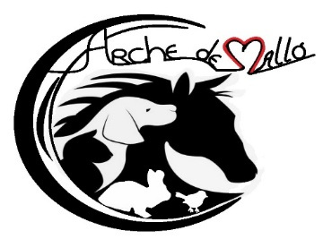

Suivi ICAD
—
Total adoptions
—
ICAD transférés
—
Restent à faire
Suivi ICAD — L'Arche de Mallo
| Chat / Nom adopté | N° puce | Adoptant | Date adoption | Commentaire | ICAD | Statut | Certif. stérilisation | Certif. ICAD | |
|---|---|---|---|---|---|---|---|---|---|
| Chargement des données... | |||||||||
Connexion requise.

Association de protection animale — 90140 Autrechêne
| Chat / Nom adopté | N° puce | Adoptant | Date adoption | Commentaire | ICAD | Statut | Certif. stérilisation | Certif. ICAD | |
|---|---|---|---|---|---|---|---|---|---|
| Chargement des données... | |||||||||